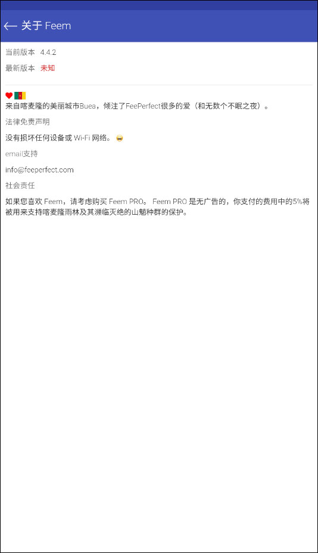

素材收集到交付一条链，Feem 帮我省了半小时每周
以前收客户素材要邮箱发压缩包、U盘手动拷、微信补漏三个轮子转，现在把 Feem 插进流程的中间环，推送式传输加断点续传，十几秒完事。
每周二下午是我固定的素材收集时间——三个客户、每人一个文件夹，里面有当天拍的产品图、录的短视频、还有要我整理的文档。三年前这套流程要走三个轮子：客户先用邮箱发压缩包，大附件走企业网盘链接，偶尔紧急的用微信甩过来我再手动归位。一轮下来，光整理格式和去重就得半小时。
后来我把 Feem 插进了这套流程的中间环，整个链条现在是这样的：客户把设备往我桌上一放（或者连同一个 Wi-Fi），我打开 Feem，点一下他们的设备昵称，整个文件夹推过来，自动落盘到我预设的目录里。客户不需要做任何操作，我这边也不用等下载、不用解压、不用手动分类。
旧流程卡在哪
先说说以前为什么慢。核心矛盾是：素材的发送方（客户）和接收方（我）在两个不同的工具生态里。
邮箱的问题：大附件有限制，超过 50MB 就得传企业网盘，客户那边要生成分享链接、要设密码、要告诉我——我这边拿到链接还要下载、还要验证完整性。一个链接来回就要五分钟。
微信的问题：视频会被压缩，原图会被自动转码，文件夹不能直接发，得客户手动打个 zip 再传。而且微信文件的自动清理周期是七天，我经常过两天翻出来发现文件没了。
U盘拷的问题：最原始也最笨，客户得带过来，我拷完还要还，中间还要确认有没有拷全、有没有坏块。
三个轮子转来转去，每周固定消耗我半小时，客户那边也觉得麻烦——他们经常忘了哪个文件已经发过、哪个还要补。
新流程怎么接进来
Feem 解决的是「设备到设备」这一步的空白。去Feem官网上能看到更完整的产品形态，它是推送式传输——文件从客户的设备主动推到我的电脑上，客户那边只需要把 Feem 打开在前台，剩下的全是我这边操作。
整个工作流现在的衔接点是这样的：
发送方（客户）：iPhone 或安卓手机上装 Feem（安装包从官方下载拿），连到我办公室的 Wi-Fi，打开 App 停在主界面等我。不需要点任何按钮。
接收方（我）：Windows 电脑上打开 Feem，看到客户的设备昵称出现在主界面，点一下进入会话，选文件夹、点发送。文件推过来之后自动落到我在 Feem Pro 里预设的 D:\客户素材\周二\ 目录——和我的归档脚本直接对上，不用再手动移动。
上下游配合：Feem 是链路中间的那个"传输管道"。上游是客户的相机相册和录音 App（他们拍完直接保存在本地），下游是我这边的归档脚本和飞书通知（脚本跑完自动给我推一条"本周素材已齐"的消息）。Feem 不做归档、不做通知——它只负责把东西从 A 点推到 B 点，而且这个推的过程我全程看得见。

实操里最容易断的两个环节
流程跑了三个月，遇到过两次差点让这套链废掉的情况。现在都有固定解法。
环节一：客户的 Feem 被系统杀后台
这是移动端最常见的坑。安卓的 MIUI、EMUI、ColorOS 这些 ROM 优化特别激进——Feem 切到后台几秒就可能被杀，传输进度条一下停住。iOS 在内存紧张时也会回收后台 App。
我现在给客户的固定操作手册里写死了一条：传输期间 Feem 必须在前台，不能锁屏、不能切到微信。如果客户实在要临时回个消息，我这边会先暂停传输，等他切回来再继续。
安卓用户还有个根治方法：在系统设置里把 Feem 设为无限制后台。小米手机在"设置 → 应用管理 → Feem → 省电策略"里改成"无限制"，华为在"电池 → 启动管理"里手动允许后台活动，具体各品牌的设置路径可以去Feem文档翻一下。这个设置做完之后后台被杀的概率降了八成。
环节二：大文件传一半 Wi-Fi 断了
有次客户带了个 12GB 的视频原文件，传了 9GB 的时候办公室路由器突然重启。我当时准备好从头再来，结果 Feem 自己在聊天界面显示了一个"重试中"的状态条——路由器恢复后，它从 9GB 那个位置继续推，五秒钟把剩下 3GB 传完了。
这是 Feem 最值钱的一个设计：它在传输前把文件切成固定大小的块，每传完一块就在磁盘上对应位置写入数据。中断后重连，两边交换已完成块列表，只传缺的那些。AirDrop 没有这个，微信没有，Snapdrop 也没有——它们断了就得从头来。
如果自动恢复失败，手动操作也简单：聊天记录里找到中断的文件条目，点一下选"继续传输"就行。最忌讳的是传输中途客户把 Feem 完全关掉（不是切后台，是强制停止），那样断点信息可能丢失，只能从头再来。
效果与边界
这套流程跑稳之后，每周的素材收集从半小时降到了七分钟——少了邮箱发压缩包、少了网盘链接来回去重、少了微信文件的手动归档。对客户那边来说，他们只需要把手机连 Wi-Fi、开 Feem、等着，也不用在三个工具之间切来切去。
但这套链也有不划算的时候：
- 客户不在现场、需要远程传的场景：Feem 走的是局域网发现，远程传不了，还是得回到网盘或邮箱。
- 文件很小的时候（几十 KB 的文档）：Feem 的设备发现和握手本身就要几秒，这时候不如直接发微信。
- 客户第一次用 Feem：需要帮他装、连 Wi-Fi、设后台权限，这一次要花 15 分钟，但之后每次都是即开即用。
还有一个边界是跨平台版本兼容性——Feem v3 和 v4 不兼容，v6 是目前所有平台的最新版。我每次给客户装的时候都会提醒一句"记得更到最新"，避免因为版本不一致连设备都发现不了。
总的来说，Feem 在我这套工作流里扮演的是那个"不做别的、只做好传输"的角色。它不归档、不通知、不做格式转换——就像一根透明的管道，把素材从客户的手机直接捅到我电脑的归档目录里。三年下来踩过的坑和找到的解法，都整理进了这份流程说明里，相关的资料我也同步在了 GitHub、Gitee 和 GitCode 三个仓库，国内访问哪个快用哪个，希望能帮到有类似场景的朋友。